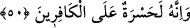
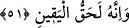

49. İçinizde (onu) yalan sayanlar bulunduğunu şüphesiz bilmekteyiz.
Yâni ey insanlar! Sizin içinizde Kur’an-ı Kerim’i yalan sayanlar olduğunu biz
bilmekteyiz. Onların bu yalan saymalarının karşılığını biz vereceğiz. İmam Mâlik (rh.)
der ki: “Bu ümmete bu âyetten daha şiddetli ve ağır gelen bir âyet yoktur.” Bu âyet-i
kerîmede aynı zamanda ilhamı yalan sayanlara da işâret olunmaktadır. Onlar da vahyi
yalan sayanlara mülhaktırlar. Çünkü vahiy ve ilham Allah’ın katından gelmektedir.
Fakat hicâb ehli olanlar, nûru görmezler.Onlar, tıpkı gözleri kör olan kimseler
gibidirler. Nûru göremediklerine göre onu nasıl kabul edebilirler ki?
50. Muhakkak o, kâfirler için bir iç yarasıdır.
“Şüphesiz o” Kur’an, onu yalan sayan “kâfirler için,” Kur’an’ı tasdik eden
müminlerin sevaplarını aldıklarını müşâhede ettiklerinde “bir iç yarası olacaktır.”
Ayrıca kâfirler, müminlerin dünyada devletlerini gördüklerinde de bu iç yangısını
hissedeceklerdir. Âyetteki “hû” zamirinin Kur’an yerine “yalanlama” masdarına gitmesi
de mümkündür. “Yalanlama” anlamı ise “mükezzibîn: yalanlayanlar” ifâdesinden
anlaşılmaktadır.
51. Ve o, gerçekten kat’î bilginin ta kendisidir.
Yâni hakkında hiç kuşku olmayan yakînin ta kendisidir. “Hak” ve “yakin” kelimeleri,
aynı mânâya gelen iki sıfattırlar. Bunlardan birinin diğerine izâfe edilmesi, bir şeyin
yine kendi nefsine izâfe edilmesi gibidir. Bu tıpkı “habbu’l-hasid/ekin dânesi” ifâdesi
gibidir. Böyle bir şeyin yine kendi nefsine izâfesi, mânâyı pekiştirmektedir. Çünkü
“hak”, kendisine kuşkunun bulaşmadığı değişmez sâbit bir kavramdır; “yakin” de aynen
böyledir.
Râğıb İsfahânî’nin Müfredat’ında ifâde olunduğuna göre “yakin” mârifet ve dirâyetin
üzerinde olarak ilmin sıfatıdır. Arapçada ilme’l-yakin, ayne’l-yakin ve hakka’l-yakin
ifâdeleri vardır. Bu kavramların arasında bir takım farklar vardır. Ancak bu farklar bu
kitapta başka yerlerde îzâh olunmuştur. Söz konusu kavramlar arasındaki farklar el-
Fusus’ta Vakıa sûresinin sonunda geçmiştir, dileyenler oraya bakabilir.
İmam’a göre bu âyet-i kerîmenin mânâsı; “O Kur’ran hakk-ı yakindir.” Bir başka
ifâdeyle; “O Kur’an haktır, içerisinde hiçbir bâtıllık yoktur. Yakindir, içinde hiçbir
kuşkuya mahal yoktur.” Sonra bu iki vasıftan birisi diğerine, mânâya pekiştirme
kazandırmak için izâfe olunmuştur.